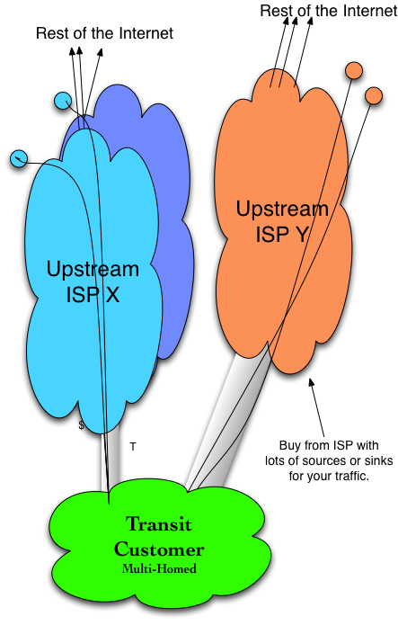

Tactic 3 - Multi-Homing
Most companies and ISPs start off singly homed. They pay the metered rate and they get access to the Internet and it just works – until it doesn’t.
Multi-homing is the practice of connecting to two or more upstream ISPs. Most large-scale companies spread their traffic across two or more ISPs in order to improve performance and resiliency and reduce costs in a competitive market (see Figure 3-3).
But there are some hurdles they need to overcome.
Many of these companies don’t have the internal networking resources to explore multi-homing. While not difficult, it may be challenging for a systems administrator to learn enough about networking to configure multi-homing the first time.
One flavor of this multi-homing tactic is to build into a well-populated co-location center – a data center housing an open market for Internet Transit services. You will pay for the cost of getting there, but the open-market effect may result in transit pricing 30% or more lower than if the transit provider has to build into your location.
One final benefit of multi-homing is that it makes the path to free traffic exchange (“peering”) much easier. The trick here is to identify the appropriate co-location center for transit and future peering, and the appropriate upstream ISPs for multi-homing. We will discuss this in a later chapter.

Figure 3-3. Tactic 3 - A multi-homed Internet Transit customer.
Notes from the field.
Content Companies and the Networking Conceptual Hurdle
I consulted with a content provider that described its content-creation operation. The provider had writers, graphic designers, marketing and advertising, sales, etc. The tech staff were primarily web site folks and a couple of systems administrators. One systems administrator shared that he had the most networking experience of his team, so he was appointed to get multi-homing operational. He described the process as “harrowing.”
He configured the secondary Internet Transit service and “held his breath” as he cut over the offered load to the backup. It didn’t work, and the company was off the air! Scary. He cut back over to the primary service and went back to the books to see what he had done wrong. When he finally had the router configured to the backup service provider, he configured the primary backup and used the primary. After everything was up and working properly (he hoped), he locked everything down and no one dared to touch the configuration again!
“This is a dangerous on-the-job-training activity – perhaps multi-homing is best done by those who have done it before,” he said.